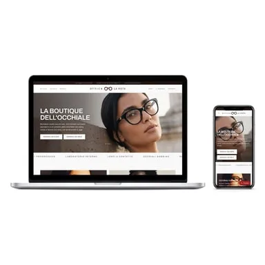
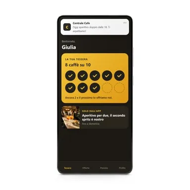
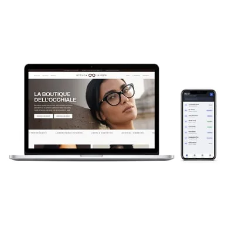
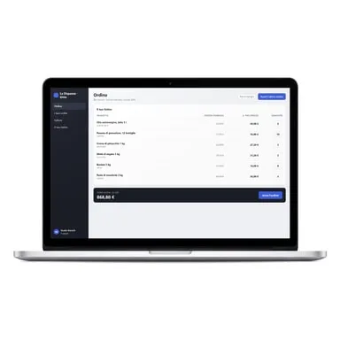
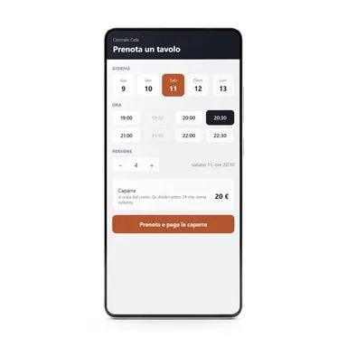

Website mit 5 bis 7 Seiten für italienischsprachige Betriebe: 999 €, ca. 180 € Provision
Produktprofil · Marktplatz-Daten 2026-10-14 · Verkaufsseiten-Recherche 2026-10-14 · Kategorien: Ohne Kategorie
- Website mit 5 bis 7 Seiten für italienischsprachige Betriebe: 999 €, ca. 180 € Provision ist ein/e Elektronische Dienstleistung, vertrieben über den Digistore24-Marktplatz von Anbieter massarocalogero19976adc, gelistet seit 2026-10-07.
- Listenpreis $1117.68 (single payment) — Checkout, Auslieferung und Rückerstattungen laufen über Digistore24 selbst, nicht über den Anbieter.
- Käuferschutz: keine standardisierte Garantie-Formulierung gefunden — Rückerstattungsbedingungen vor der Zahlung auf der offiziellen Seite prüfen.
Interesse an Website mit 5 bis 7 Seiten für italienischsprachige Betriebe: 999 €, ca. 180 € Provision? Aktueller Preis, Boni und Garantiebedingungen finden Sie auf der offiziellen Seite des Anbieters:
Offizielle Verkaufsseite ansehen
Affiliate-Link (Werbung) — wir verdienen ggf. eine Provision, ohne Mehrkosten für Sie.

Marktplatz-Daten
| Produkttyp | Elektronische Dienstleistung |
|---|---|
| Preis | $1117.68 (Single payment) |
| Garantie/Rückgabe | Laut Verkaufsseite des Anbieters — vor dem Kauf auf der offiziellen Seite prüfen |
| Anbieter | massarocalogero19976adc (gelistet seit 2026-10-07) |
Marktplatz-Beschreibung des Anbieters
Professionelle Website mit 5 bis 7 Seiten im Design des Kunden, mit Texten, SEO-Grundlagen, Kontaktformular und WhatsApp-Button. Der Kunde zahlt einmal, die Website gehört ihm, ohne Pflicht-Abo. Für wen: Bars, Restaurants, Geschäfte, Handwerker, Praxen und Freiberufler ohne Website oder mit einer veralteten. Deine Provision: 20 % pro Verkauf, ca. 180 € bei 999 € netto. Einmalzahlung, kein Abo. Wichtig: Verkaufsseite, Gespräche und Umsetzung sind auf Italienisch. Ideal, wenn du italienischsprachige Selbstständige in Italien, Deutschland oder der Schweiz erreichst. So läuft es: Nach der Bestellung meldet sich unser Team beim Kunden, bespricht alles per Videocall und setzt das Projekt komplett um. Du bringst den Kontakt, wir machen den Rest.
Von der Verkaufsseite des Anbieters
Seitentitel: Sito web professionale: 999 € più IVA | DirezioneX
Meta-Beschreibung: Da cinque a sette pagine sul tuo marchio, con testi, SEO di base, modulo di contatto e WhatsApp. Lo costruiamo noi e resta tuo.
Hauptüberschrift
Sito web professionale
Abschnitts-Überschriften
- Cosa compri .
- Cosa succede dopo .
Einstiegstext
Siti web Sito web professionale Da cinque a sette pagine sul tuo marchio, con testi, SEO di base, modulo di contatto e WhatsApp. Lo costruiamo noi e resta tuo.
Si apre il modulo d’ordine sicuro di Digistore24, che incassa il pagamento ed emette la fattura. Il lavoro lo fa DirezioneX.
Paghi sul modulo sicuro di Digistore24. 2 Fissiamo la videochiamata Dopo il pagamento ti scriviamo per scegliere giorno e ora.
La direzione giusta per il tuo business. Siti web, ecommerce, advertising e software per aziende che vogliono crescere.
Preisangaben auf der Seite: $14 · $22
Recherche-Methode: rohes HTML · 337 Wörter · Qualität: medium · recherchiert am 2026-10-14. Vollständige Recherche-Datei (MD) ↗
Wie Produkte dieser Art geliefert werden
Allgemeiner Hinweis zu diesem Produkttyp (keine anbieterspezifische Anleitung): Remote-Dienstleistungen werden elektronisch erbracht — der Anbieter meldet sich nach dem Kauf. Für die genaue Anwendung von Website mit 5 bis 7 Seiten für italienischsprachige Betriebe: 999 €, ca. 180 € Provision sind die offizielle Verkaufsseite und die enthaltenen Materialien maßgeblich.
Gut zu wissen
- Hoher Preis: $1117.68 ist eine erhebliche Ausgabe — prüfen Sie, ob es einen Zahlungsplan gibt, und vergleichen Sie zuerst die günstigeren Alternativen der Kategorie.
- Keine Garantie-Formulierung in unserer Recherche gefunden — bestätigen Sie das Rückgabefenster auf der offiziellen Seite, bevor Sie kaufen.
Was ist Website mit 5 bis 7 Seiten für italienischsprachige Betriebe: 999 €, ca. 180 € Provision?
Website mit 5 bis 7 Seiten für italienischsprachige Betriebe: 999 €, ca. 180 € Provision ist ein/e elektronische dienstleistung in der Kategorie digitale Produkte des Digistore24-Marktplatzes, veröffentlicht von Anbieter massarocalogero19976adc und im Verkauf seit 2026-10-07. Der Anbieter beschreibt es so: "Professionelle Website mit 5 bis 7 Seiten im Design des Kunden, mit Texten, SEO-Grundlagen, Kontaktformular und WhatsApp-Button. Der Kunde zahlt einmal, die Website gehört ihm, ohne Pflicht-Abo. Für wen: Bars, Restaurants, Geschäfte, Handwerker, Praxen und Fre" (Marktplatz-Beschreibung des Anbieters, leicht gekürzt).
Website mit 5 bis 7 Seiten für italienischsprachige Betriebe: 999 €, ca. 180 € Provision Preis: was Sie zahlen
Der Marktplatz listet Website mit 5 bis 7 Seiten für italienischsprachige Betriebe: 999 €, ca. 180 € Provision zum $1117.68 Preis (single payment). Digistore24 fügt im Checkout die gesetzliche Steuer Ihres Landes hinzu — dort sehen Sie den Endbetrag vor der Zahlung. Die Verkaufsseite selbst nennt: $14, $22 (Anbieteraussagen — verbindlich ist der Checkout-Betrag). Eine separate Plattformgebühr gibt es nicht; Anbieter können eigene Upsells nach dem Checkout anbieten.
Website mit 5 bis 7 Seiten für italienischsprachige Betriebe: 999 €, ca. 180 € Provision Rückerstattung und Geld-zurück-Garantie
Wir haben keine standardisierte Garantie-Formulierung auf der Verkaufsseite gefunden. Rückerstattungen für Digistore24-Käufe laufen über die Plattform: Antrag über den Support-Link in Ihrer Bestell-E-Mail, innerhalb des Garantiezeitfensters, das im Checkout angezeigt wird. Praktischer Rat: Entscheiden Sie innerhalb des Fensters — wenn das Produkt unter den Erwartungen bleibt, erstatten lassen statt irren lassen.
Mechanik im Detail: So funktionieren Digistore24-Rückerstattungen.
Für wen ist Website mit 5 bis 7 Seiten für italienischsprachige Betriebe: 999 €, ca. 180 € Provision geeignet?
Basierend auf der digitale Produkte-Einordnung und der single payment-Abrechnung richtet sich Website mit 5 bis 7 Seiten für italienischsprachige Betriebe: 999 €, ca. 180 € Provision an Käufer, die digitale produkte-Lösungen suchen und ein Budget für einen Premium-Kauf eingeplant haben. Der ehrliche Test ist nicht die Kategorie, sondern Ihre eigene Situation: Werden Sie es realistisch innerhalb des Garantiefensters nutzen? Wenn ja, ist der Preis eine Investition; wenn nein, ist er Ballast — unabhängig von der Qualität.
Ist Website mit 5 bis 7 Seiten für italienischsprachige Betriebe: 999 €, ca. 180 € Provision seriös? Was Sie vor dem Kauf prüfen
Wir bewerten keine Seriosität — das kann niemand, ohne das Produkt zu nutzen. Prüfbare Punkte, alle auf dieser Seite: die Marktplatz-Historie des Anbieters (im Verkauf seit 2026-10-07), die wörtlichen Verkaufsseiten-Auszüge unten (gekennzeichnet als Anbieteraussagen — deren Werbung, nicht unsere Empfehlung), die Garantiebedingungen im Checkout und die Auslieferungsart. Vorsichtsignale bei jedem Angebot: Countdown-Dringlichkeit gepaart mit vagen Rückerstattungsbedingungen, Testimonials ohne Datum und Anbieterseiten, die den Preis bis zum Checkout verstecken.
Wie kommen Sie nach dem Kauf an Website mit 5 bis 7 Seiten für italienischsprachige Betriebe: 999 €, ca. 180 € Provision?
Der Checkout läuft über Digistore24. Nach der Zahlung: Remote-Dienstleistungen werden elektronisch erbracht — der Anbieter meldet sich nach dem Kauf. Bewahren Sie die Bestell-E-Mail auf — sie ist Ihr Schlüssel zum/d zur elektronische dienstleistung, zu Rückerstattungsanträgen und zum Digistore24-Käufersupport.
Website mit 5 bis 7 Seiten für italienischsprachige Betriebe: 999 €, ca. 180 € Provision Erfahrungen: so recherchieren Sie richtig
Die meisten „Erfahrungsberichte" zu Marktplatz-Produkten sind Affiliate-Inhalte — einschließlich Seiten wie dieser, die an Käufen mitverdienen. Behandeln Sie jeden Bericht (auch unseren) als Ausgangspunkt und prüfen Sie gegen Primärquellen: die Verkaufsseite des Anbieters, die Digistore24-Rückerstattungsrichtlinie und — für digitale produkte — unabhängige Communities außerhalb des Affiliate-Ökosystems. Auf dieser Seite sind die Verkaufsseiten-Auszüge unten wörtlich zitiert, damit Sie die Aussagen des Anbieters bewerten können, ohne wegzuklicken.
Wie Sie Website mit 5 bis 7 Seiten für italienischsprachige Betriebe: 999 €, ca. 180 € Provision sicher kaufen
- Öffnen Sie die offizielle Verkaufsseite und lesen Sie das vollständige Angebot.
- Bestätigen Sie Endpreis und Garantiezeitfenster auf der Digistore24-Kassenseite — sie ist bindend, kein Vergleichsportal.
- Zahlen Sie innerhalb des Digistore24-Checkouts (niemals per Überweisung oder Off-Platform-Links).
- Speichern Sie die Bestellbestätigung; notieren Sie die Rückerstattungsfrist im Kalender.
- Prüfen Sie zügig. Der Digistore24-Käufersupport hilft, wenn der Anbieter nicht reagiert.
Vollständiges Recherche-Archiv für dieses Produkt (Markdown: kompletter Marktplatz-Datensatz + wörtliche Verkaufsseiten-Auszüge): Website mit 5 bis 7 Seiten für italienischsprachige Betriebe: 999 €, ca. 180 € Provision — Datenarchiv (.md).
- Listenpreis & Abrechnung — Quelle: offizielle Digistore24-Marktplatz-API, Stand 2026-10-14. Maßgeblich für den aktuellen Preis ist immer die Kassenseite.
- Verkaufsseiten-Zitate — Quelle: https://www.direzionex.com/offerta/sito-web, abgerufen 2026-10-14 (Methode: rohes HTML). Verify: offizielle Seite öffnen.
- Garantie / Rückgabe — vom Anbieter festgelegt; vor dem Kauf auf der Verkaufsseite bestätigen.
- Nicht von uns geprüft: Produktqualität, Ergebnisse, Testimonials — kein Praxistest für dieses Listing durchgeführt.
Häufige Fragen zu Website mit 5 bis 7 Seiten für italienischsprachige Betriebe: 999 €, ca. 180 € Provision
Antworten aus dem Marktplatz-Snapshot (2026-10-14) und der Verkaufsseiten-Recherche (2026-10-14); Anbieteraussagen sind inline gekennzeichnet.
Was ist Website mit 5 bis 7 Seiten für italienischsprachige Betriebe: 999 €, ca. 180 € Provision?
Website mit 5 bis 7 Seiten für italienischsprachige Betriebe: 999 €, ca. 180 € Provision ist ein Angebot des Typs „Elektronische Dienstleistung" im Digistore24-Marktplatz, Anbieter: massarocalogero19976adc, gelistet seit 2026-10-07. Digistore24 wickelt Checkout, Lieferung und Rückgaben ab.
Wie viel kostet Website mit 5 bis 7 Seiten für italienischsprachige Betriebe: 999 €, ca. 180 € Provision?
Der Digistore24-Marktplatz listet es für $1117.68 (single payment). Preise legt der Anbieter fest und können sich ändern — der Marktplatz-Eintrag oben zeigt den Schnappschuss; die offizielle Verkaufsseite zeigt den aktuellen Preis.
Gibt es eine Geld-zurück-Garantie für Website mit 5 bis 7 Seiten für italienischsprachige Betriebe: 999 €, ca. 180 € Provision?
Unsere Verkaufsseiten-Recherche hat keine explizite Garantie-Formulierung gefunden. Viele Digistore24-Produkte bieten 60 Tage Geld-zurück, aber das legt jeder Anbieter selbst fest — bestätigen Sie es auf der offiziellen Verkaufsseite, bevor Sie kaufen.
Ist Website mit 5 bis 7 Seiten für italienischsprachige Betriebe: 999 €, ca. 180 € Provision seriös?
Wir bewerten keine Seriosität — wir veröffentlichen überprüfbare Zahlen: Anbieter massarocalogero19976adc (gelistet seit 2026-10-07), mit der vollständigen Verkaufsseiten-Recherche archiviert auf dieser Seite (Anbieteraussagen als solche gekennzeichnet). Lesen Sie unsere 6-Punkte-Bewertungsmethode und entscheiden Sie anhand der Zahlen — oder diskutieren Sie Website mit 5 bis 7 Seiten für italienischsprachige Betriebe: 999 €, ca. 180 € Provision auf GitHub.
Wo kann ich Website mit 5 bis 7 Seiten für italienischsprachige Betriebe: 999 €, ca. 180 € Provision sicher kaufen?
Nur über die offizielle Verkaufsseite, die auf dieser Seite verlinkt ist (Checkout und Rückgaben laufen über Digistore24). Prüfen Sie dort Preis und Garantie vor der Bestellung. Der Link ist ein Affiliate-Link — der Kauf unterstützt diese Website ohne Mehrkosten für Sie.
Wie erhalte ich Website mit 5 bis 7 Seiten für italienischsprachige Betriebe: 999 €, ca. 180 € Provision nach der Zahlung?
Der Checkout läuft über Digistore24: Nach der Zahlung erhalten Sie Ihren Zugang oder Download per E-Mail und in Ihrem Digistore24-Kundenkonto. Lieferdetails für diesen Produkttyp: Remote-Dienstleistungen werden elektronisch erbracht — der Anbieter meldet sich nach dem Kauf. Bei Problemen kann der Digistore24-Käufersupport Ihre Bestellung wiederherstellen.
Website mit 5 bis 7 Seiten für italienischsprachige Betriebe: 999 €, ca. 180 € Provision auf Reddit diskutieren
In Community-Threads vergleichen echte Käufer Erfahrungen. Wir verlinken Communities, keine einzelnen Posts — Threads verschwinden, Subreddits bleiben:
- Reddit-Suche nach „Website mit 5 bis 7 Seiten für italienischsprachige Betriebe: 999 €, ca. 180 € Provision" — Live-Ergebnisse, von uns nicht beeinflusst.
- Top-„Erfahrungs"-Treffer dieses Jahr — selbst nach Aktualität filtern.
Passendes auf Amazon.de
Physische Produkte und Zubehör, die häufig zusammen mit Website mit 5 bis 7 Seiten für italienischsprachige Betriebe: 999 €, ca. 180 € Provision gekauft werden:
- digitale Produkte auf Amazon.de — Top-Ergebnisse, Amazon-Ranking.
- Bestseller: digitale Produkte — live Liste von Amazon, von uns nicht kuratiert.
Werbung: Als Amazon-Partner verdient DigistorePicks DE an qualifizierten Käufen (Partner-tag adminstorede-21). Amazon setzt eigene Preise und Provisionen (niedrige einstellige Prozente — weit unter den 30–75% der Digistore24-Anbieter). Amazon ist ein Convenience-Angebot für Sachprodukte, kein Ersatz für das digitale Produkt oben.
Weitere Angebote von massarocalogero19976adc
Gesamtes Sortiment: massarocalogero19976adc Anbieter-Hub — alle Listings mit Marktplatz-Daten.

Eigene App für iOS und Android im Design des Kunden: Treuekarte mit Punkten, exklusive Angebote und Push-Nachrichten direkt aufs Handy seiner Kunden, ohne Werbe

Website mit bis zu 12 Seiten plus Verwaltung für Anfragen, Kunden, Angebote und Termine. Jede Anfrage über die Website wird automatisch zur Kundenkarte, Bewertu

Online-Katalog mit eigenem Zugang für jede Firma: Jeder Kunde sieht seine Preise und bestellt online, ohne Telefonate. Wiederkehrende Bestellungen sind schon vo

Buchungssystem mit Anzahlung per Karte: Tische, Liegen, Termine oder Mietfahrzeuge, alles in einem Kalender. Erscheint der Kunde nicht, ist die Anzahlung schon
Ähnliche Suchanfragen
Wo Sie es sich ansehen können
Wo Sie es sich ansehen können
Aktuelle Preise, Garantie und Boni finden Sie auf der offiziellen Verkaufsseite:
Offizielle Verkaufsseite ansehen
Das ist ein Affiliate-Link (Werbung) — kaufen Sie darüber, verdienen wir ggf. eine Provision, ohne Mehrkosten für Sie.
Quellen & weiterführende Informationen
- Offizielle Verkaufsseite (aktueller Preis, Garantie, Boni): www.direzionex.com/offerta/sito-web (Affiliate-Link)
- Öffentliche Digistore24-Produktseite: checkout-ds24.com/product/741550
- Vollständige Recherche-Datei (Markdown, versioniert): content/products/60291-website-mit-5-bis-7-seiten-f-r-italienischsprachige-betriebe-999-ca-180-provision.md
- Marktplatz-Kategorie: Ohne Kategorie
Wie wir Produkte wie Website mit 5 bis 7 Seiten für italienischsprachige Betriebe: 999 €, ca. 180 € Provision bewerten
Sechs Prüfungen, ausschließlich mit offiziellen Marktplatz-Zahlen. Die vollständige Bewertungsmethode lesen · unsere Recherche-Standards & Kennzeichnung.
Fragen oder eigene Erfahrungen mit Website mit 5 bis 7 Seiten für italienischsprachige Betriebe: 999 €, ca. 180 € Provision?
Praxis-Tests veröffentlichen wir erst, nachdem wir ein Produkt selbst gekauft haben — aber Ihre Erfahrung hilft anderen Lesern: Diskussion zu Website mit 5 bis 7 Seiten für italienischsprachige Betriebe: 999 €, ca. 180 € Provision auf GitHub starten/verfolgen. Falsche Zahl gefunden? Korrektur melden — jede Seite zeigt ihre Datenstände, Korrekturen gelten für die ganze Website.